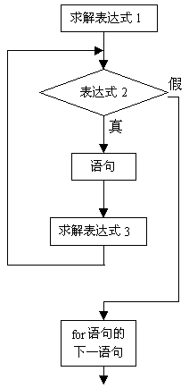

在C语言中，for语句使用最为灵活，它完全可以取代 while 语句。它的一般形式为:
for(表达式1；表达式2；表达式3) 语句
它的执行过程如下：
1) 先求解表达式1。
2) 求解表达式2，若其值为真（非0），则执行for语句中指定的内嵌语句，然后执行下面第3）步；若其值为假（0），则结束循环，转到第5）步。
3) 求解表达式3。
4) 转回上面第2）步继续执行。
5) 循环结束，执行for语句下面的一个语句。
其执行过程可用下图表示。

for语句最简单的应用形式也是最容易理解的形式如下：
for(循环变量赋初值；循环条件；循环变量增量) 语句
循环变量赋初值总是一个赋值语句, 它用来给循环控制变量赋初值; 循环条件是一个关系表达式,它决定什么时候退出循环；循环变量增量，定义循环控制变量每循环一次后 按什么方式变化。这三个部分之间用“；”分开。
例如:
for(i=1;i<=100; i++)
{sum=sum+i;}
先给i赋初值1,判断i是否小于等于100, 若是则执行语句,之后值增加1。再重新判断, 直到条件为假,即i>100时,结束循环。
相当于：
i=1;
while（i<=100）
{ sum=sum+i;
i++;
}
对于for循环中语句的一般形式，就是如下的while循环形式：
表达式1；
while（表达式2）
{语句
表达式3；
}
1) for循环中的“表达式1（循环变量赋初值）”、“表达式2(循环条件)”和“表达式3(循环变量增量)”都是选择项, 即可以缺省,但“；”不能缺。
2) 省略了“表达式1（循环变量赋初值）”, 表示不对循环控制变量赋初值。
3) 省略了“表达式2(循环条件)”, 则不做其它处理时便成为死循环。
例如：
for(i=1;;i++)sum=sum+i;
相当于：
i=1;
while(1)
{sum=sum+i;
i++;}
4) 省略了“表达式3(循环变量增量)”, 则不对循环控制变量进行操作,这时可在语句体中加入修改循环控制变量的语句。
例如：
for(i=1;i<=100;)
{sum=sum+i;
i++;}
5) 省略了“表达式1（循环变量赋初值）”和“表达式3(循环变量增量)”。
例如：
for(;i<=100;)
{sum=sum+i;
i++;}
相当于：
while(i<=100)
{sum=sum+i;
i++;}
6) 3个表达式都可以省略。
例如：
for(；；)语句
相当于：
while(1)语句
7) 表达式1可以是设置循环变量的初值的赋值表达式，也可以是其他表达式。
例如：
for(sum=0;i<=100;i++)sum=sum+i;
8) 表达式1和表达式3可以是一个简单表达式也可以是逗号表达式。
for(sum=0,i=1;i<=100;i++)sum=sum+i;
或：
for(i=0,j=100;i<=100;i++,j--)k=i+j;
9) 表达式2一般是关系表达式或逻辑表达式，但也可是数值表达式或字符表达式，只要其值非零，就执行循环体。
例如：
for(i=0;(c=getchar())!=’\n’;i+=c);
又如：
for(;(c=getchar())!=’\n’;) printf(“%c”,c);
main()
{
int i, j, k;
printf("i j k\n");
for (i=0; i<2; i++)
for(j=0; j<2; j++)
for(k=0; k<2; k++)
printf(“%d %d %d\n", i, j, k);
}